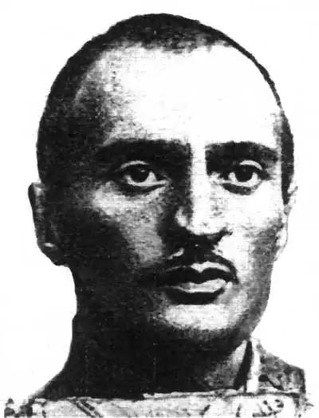
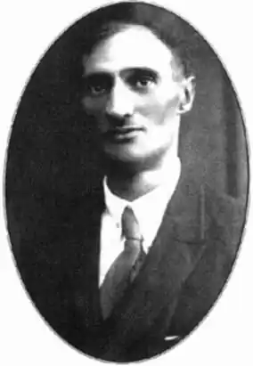

Український поет, представник "празької школи". Юрій Дараган – перший поет, в якого виразно окреслився комплекс ідей і почувань, характерний для "пражан".
Народився Юрій Дараган 16 березня 1894 року у Єлисаветграді на Херсонщині в родині інженера. Мати — грузинка. Батько — українець, помер за три місяці до народження сина, тому невдовзі після народження Юрія осиротіла сім'я переїздить у Грузію, до Тифліса, де малюка і хрестили.
Навчався Дараган у Тираспільській реальній школі, але закінчити її не довелося — хлопця забрали на першу світову війну. Там Юрій Дараган – підпоручник російської армії. Був поранений. Після Лютневої революції 1917 року Дараган – у лавах військ УНР. Спочатку — як командир кулеметної сотні в Житомирській військовій школі, а потім — старшина Кам’янецької школи. Після поразки у визвольних змаганнях Дараган разом із іншими вояками в 1920 році інтернований в таборах Польщі (Ланцут, Вадовиці, Каліш) для військовополонених. Тут і прийшла до нього непереборна жадоба творчості. Але голодне та холодне життя в таборах також спричинило важку хворобу. Після переїзду до Чехословаччини, в Прагу, у 1923 році вступає до Українського вищого педагогічного інституту ім. М. Драгоманова. Але йому не судилося його закінчити. Через сухоти легень і горла (іншими словами — туберкульоз) Юрій Дараган помер 17 березня 1926 року у туберкульозному санаторії "На Плеше", у м.Плешове поблизу Праги. Похований на Ольшанському цвинтарі в Празі. Писав Дараган переважно українською. Перший російський вірш надрукував у 14 років у часописі "Закавказье". Через два роки дав цикл віршів у альманах "Поросль", а через три — друкувався в альманасі "Іммортелі" і журналі "Хмель". Разом зі своїм земляком Євгеном Маланюком у 1922-1923 роках Юрій Дараган видавав часопис "Веселка", де друкував свої твори. Він одним із перших українських поетів в еміграції звернув увагу на призабуті старокиївські сторінки. Вірші "Похід", "Київ", "Милуніа", "Свати", які спочатку поет надрукував у "Веселці", не тільки мали художню цінність, але й стали певним зачином розробки цієї теми іншими авторами. У 1925 році, ще за життя Дарагана, виходить єдина його збірка "Сагайдак", яка, за словами критиків, тематично та ідейно постала передвісницею художньої платформи майбутньої празької школи української поезії. Вихід збірки критика привітала, а в 1965 році книжку перевидали. Про те, чому син грузинки обрав українську — мовою своїх творів, Юрій Дараган писав у листі до Микити Шаповала (орієнтовно 1925 рік), де поет стисло і емоційно викладає свою автобіографію: "Народився я 16 березня 1894 р. (а не 1893) у Єлисаветі на Херсонщині, але хутко був вивезений (...) до столиці Картвелії Тифлісу, де мене і хрестили. Батько мій був українець і крупний залізничний урядовець, але за три місяці до мого народження вмер. Мати була грузинка, чи то пак картвелка, але з закінченою гімназійною освітою (у тих краях це про багато казало). Батьків своїх прираховую до заможної інтелігенції, мали у Тифлісі власний 4-х поверховий будинок. Мати виховувала мене яко росіянина... (...) З 1915 р. старшиною на фронті, був ранений, революція захопила мене після раненія у Петербурзі. Вихований не чорносотенцями, а в дусі здорового російського патріотизму, але знаючи твердо, що я "малорос" і нащадок запорожського сотника, у травні 1917 р. я вже був членом Петербурзької Української військової ради і розумом твердо рішив, що я мушу бути завжди у гурті тієї російської модифікації (як я тоді рахував малоросів), до якої я належу по крові, у кінці 17 року я вже був у Київі і думкою ні разу не зрадив українству, а серцем? Серцем українізувався поступово. Найбільш помагали наші пісні і наша історія, що часами наповнює тебе божевільною гордістю, а часами так нелюдськи бичує ганьбою і соромом. Тепер я не в стані говорити про українство спокійно – реву при сторонніх людях, тепер бути не українцем я у жодний спосіб не зможу і що б зі мною не виробляли, я завжди зостанусь чи ув'язненим, чи розстріляним, чи помилованим, але завжди українцем". Поезія Юрія Дарагана невелика за обсягом. Також його цікавила українська історія в найрізноманітніших її сюжетах. За кілька років до смерті поет часто навідувався з Праги до Подєбраду, де студіювали його недавні бойові побратими. Власне, лише три – чотири останні роки життя Юрія Дарагана були найактивнішою порою творчості, коли писалися вірші збірки "Сагайдак", які скрасили празьку школу української поезії. Юрій Дараган дуже любив пейзаж, умів сприймати його своїм особливим зором. Навіть у передсмертному вірші "Прозорість" бачимо зв’язок яскравої поетичної палітри. Пейзаж його надихає, додає сил, чарує красою. Окрему сторінку творчості Юрія Дарагана становила поема "Мазепа" (1924), у якій він спробував відтворити величину й трагічну сторінку часів Полтавської битви 1709 року. Крім того, Юрій Дараган крізь усе своє життя поряд з українським проніс грузинське слово. Тема Кавказу у поетовім доробку дуже вагома. Якими дорогами не водило б його емігрантське життя, Кавказ весь час був із ним.